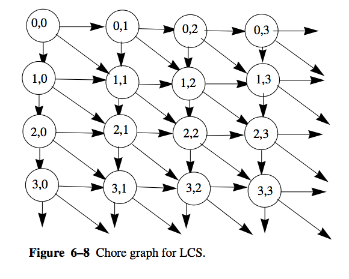
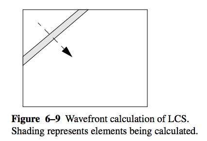
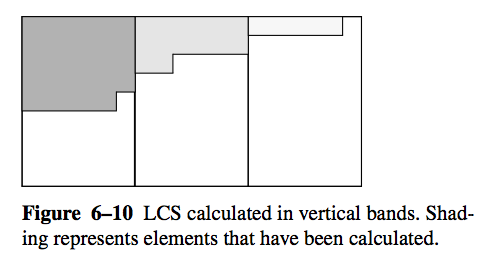

Parallelism using Actors¶
In this section, we’re going to take a look at the Java vs. Scala way of doing things. We’ll look at a guiding example that is focused on concurrent/parallel computing. This example appeared in High Performance Java Platform Computing by Thomas W. Christopher and George K. Thiruvathukal. We’ll show how to organize a previously worked out solution that uses more explicit concurrency mechanisms from Java and how it can be reworked into a side-effect free Scala version by taking advantage of Scala’s innate support for basic actor-style parallelism.
Guiding Example: Longest Common Subsequence¶
A longest common subsequence (LCS) of two strings is a longest sequence of characters that occurs in order in the two strings. It differs from the longest common substring in that the characters in the longest common subsequence need not be contiguous. There may, of course, be more than one LCS, since there may be several subsequences with the same length.
There is a folk algorithm to find the length of the LCS of two strings. The algorithm uses a form of dynamic programming. In divide-and-conquer algorithms, recall that the overall problem is broken into parts, the parts are solved individually, and the solutions are assembled into a solution to the overall problem. Dynamic programming is similar, except that the best way to divide the overall problem into parts is not known before the subproblems are solved, so dynamic programming solves all subproblems and then finds the best way to assemble them.
The algorithm works as follows: Let the two strings be c0 and c1.
Create a two-dimensional array a:
int [][] a=new int[c0.length()+1] [c1.length()+1]
Initialize a[i][0] to 0 for all i and a[0][j] to 0 for all j,
since there are no characters in an empty substring. The other elements,
a[i][j] , are filled in as follows:
for (int i=0; i <= c0.length(); i++)
a[i][0] = 0;
for (int j=0; j <= c1.length(); j++)
a[0][j] = 0;
We will fill in the array so that a[i][j] is the length of the LCS of
c0.substring(0,i) and c1.substring(0,j). Recall that
s.substring(m,n) is the substring of s from position m up to, but
not including, position n.:
for (i=1; i <= c0.length(); i++)
for (j=1; j <= c1.length(); j++)
if (c0.charAt(i-1) == c1.charAt(j-1))
a[i][j]=a[i-1][j-1]+1;
else
a[i][j]=Math.max(a[i][j-1],a[i-1][j]);
The above shows a traditional imperative solution that constructs a result matrix comprising the results of the LCS.
So how exactly does this method work?
Element a[i-1][j-1] has the length of the LCS of string
c0.substring(0,i-1) and c1.substring(0,j-1). If elements
c0.charAt(i-1) and c1.charAt(j-1) are found to be equal, then the LCS can be
extended by one to length a[i-1] [j-1]+1. If these characters don’t match,
then what? In that case, we ignore the last character in one or the other of
the strings. The LCS is either a[i][j-1] or a[i-1][j], representing
the maximum length of the LCS for all but the last character of
c1.substring(0,j-1) or c0.substring(0,i-1), respectively.
The chore graph from [HPJPC] for calculation of the LCS is shown in the following figure.
{kind=link}
Any order of calculation that is consistent with the dependencies is permissible. Two are fairly obvious: (1) by rows, top to bottom, and (2) by columns, left to right.
Another possibility is along diagonals. All a[i][j], where i+j==m can
be calculated at the same time, for m stepping from 2 to
c0.length()+c1.length(). . Visualizing waves of computation passing across
arrays is a good technique for designing parallel array algorithms. It has
been researched under the names systolic arrays and wavefront arrays
[Wavefront].
The following figure shows how a wavefront computation progresses.
{kind=link}
Kung, C. E. Leiserson: Algorithms for VLSI processor arrays; in: C. Mead, L. Conway (eds.): Introduction to VLSI Systems; Addison-Wesley, 1979
Thomas W. Christopher and George K. Thiruvathukal, High Performance Java Platform Computing, Prentice Hall PTR and Sun Microsystems Press, 2000.
Java Threads Implementation¶
git clone https://github.com/LoyolaChicagoCode/hpjpc-source-java
Our Java implementation (see LCS.java) of the LCS algorithm divides the array into vertical bands and is pictured in Each band is filled in row by row from top to bottom. Each band (except the leftmost) must wait for the band to its left to fill in the last element of a row before it can start can start filling in that row. This is an instance of the producer-consumer releationship.
The following figure shows how our Java solution organizes the work in bands:
{kind=link}
LCS class
1 int numThreads;
2 char[] c0;
3 char[] c1;
4 int[][] a;
5 Accumulator done;
1 public LCS(char[] c0, char[] c1, int numThreads) {
2 this.numThreads = numThreads;
3 this.c0 = c0;
4 this.c1 = c1;
5 int i;
6 done = new Accumulator(numThreads);
7
8 a = new int[c0.length + 1][c1.length + 1];
9
10 Semaphore left = new Semaphore(c0.length), right;
11 for (i = 0; i < numThreads; i++) {
12 right = new Semaphore();
13 new Band(startOfBand(i, numThreads, c1.length), startOfBand(i + 1,
14 numThreads, c1.length) - 1, left, right).start();
15 left = right;
16 }
17 }
1 public LCS(String s0, String s1, int numThreads) {
2 this(s0.toCharArray(), s1.toCharArray(), numThreads);
3 }
1 int startOfBand(int i, int nb, int N) {
2 return 1 + i * (N / nb) + Math.min(i, N % nb);
3 }
4
5 // begin-LCS-getLength
6 public int getLength() {
7 try {
8 done.getFuture().getValue();
9 } catch (InterruptedException ex) {
10 }
11 return a[c0.length][c1.length];
12 }
1 public int getLength() {
2 try {
3 done.getFuture().getValue();
4 } catch (InterruptedException ex) {
5 }
6 return a[c0.length][c1.length];
7 }
8
9 // end-LCS-startOfBand
10
11 public int[][] getArray() {
12 try {
13 done.getFuture().getValue();
14 } catch (InterruptedException ex) {
15 }
16 return a;
17 }
Band internal class (does the work)
1 int low;
2 int high;
3 Semaphore left, right;
1 Band(int low, int high, Semaphore left, Semaphore right) {
2 this.low = low;
3 this.high = high;
4 this.left = left;
5 this.right = right;
6 }
Actual Runnable body
1 public void run() {
2 try {
3 int i, j;
4 for (i = 1; i < a.length; i++) {
5 left.down();
6 for (j = low; j <= high; j++) {
7 if (c0[i - 1] == c1[j - 1])
8 a[i][j] = a[i - 1][j - 1] + 1;
9 else
10 a[i][j] = Math.max(a[i - 1][j], a[i][j - 1]);
11 }
12 right.up();
13 }
14 done.signal();
15 } catch (InterruptedException ex) {
16 }
17 }
Main
1 public static void main(String[] args) {
2 if (args.length < 2) {
3 System.out.println("Usage: java LCS$Test1 string0 string1");
4 System.exit(0);
5 }
6 int nt = 3;
7 String s0 = args[0];
8 String s1 = args[1];
9 System.out.println(s0);
10 System.out.println(s1);
11 long t0 = System.currentTimeMillis();
12 LCS w = new LCS(s0, s1, nt);
13 long t1 = System.currentTimeMillis() - t0;
14 System.out.println(w.getLength());
15 System.out.println("Elapsed time " + t1 + " milliseconds");
16 }
Scala Actors Implementation¶
git clone https://github.com/LoyolaChicagoCode/lcs-systolicarray-scala
Trait
1trait SystolicArray[T] {
2 def start(): Unit
3 def put(v: T): Unit
4 def take(): T
5 def stop(): Unit
6}
The entire SystolicArray implementation is here:
1trait SystolicArray[T] {
2 def start(): Unit
3 def put(v: T): Unit
4 def take(): T
5 def stop(): Unit
6}
Logging
// begin-object-logger
1 private object logger {
2 private val DEBUG = false
3 // use call-by-name to ensure the argument is evaluated on demand only
4 def debug(msg: => String) { if (DEBUG) println("debug: " + msg) }
5 // add other log levels as needed
6 }
Apply
1 def apply[T](rows: Int, cols: Int, f: Acc[T]): SystolicArray[T] = {
2 require { 0 < rows }
3 require { 0 < cols }
4 val result = new SyncVar[T]
5 lazy val a: LazyArray[T] = Stream.tabulate(rows, cols) {
6 (i, j) => new Cell(i, j, rows, cols, a, f, result)
7 }
8 val root = a(0)(0)
9 new SystolicArray[T] {
10 override def start() = root.start()
11 override def put(v: T) { root ! ((-1, -1) -> v) }
12 override def take() = result.take()
13 override def stop() { root ! Stop }
14 }
15 }
The internal Cell class, used to represent the cells of the Systolic Array (generally).
1 protected class Cell[T](row: Int, col: Int, rows: Int, cols: Int, a: => LazyArray[T],
2 f: Acc[T], result: SyncVar[T]) extends Actor { self =>
3
4 require { 0 <= row && row < rows }
5 require { 0 <= col && col < cols }
6
7 logger.debug("creating (" + row + ", " + col + ")")
8
9 override def act() {
10 logger.debug("starting (" + row + ", " + col + ")")
11 var start = true
12 loop {
13 logger.debug("waiting (" + row + ", " + col + ")")
14 barrier(if (row == 0 || col == 0) 1 else 3) { ms =>
15 if (start) { startNeighbors() ; start = false }
16 propagate(ms)
17 }
18 // one-way message: anything below here is skipped!
19 }
20 }
21
22 protected def barrier(n: Int)(f: Map[Pos, T] => Unit): Unit =
23 barrier1(n)(f)(Map.empty)
24
25 protected def barrier1(n: Int)(f: Map[Pos, T] => Unit)(ms: Map[Pos, T]): Unit = {
26 if (n <= 0)
27 f(ms)
28 else
29 react {
30 case Stop => stopNeighbors() ; exit()
31 case (p: Pos, v: T) => barrier1(n - 1)(f)(ms + (p -> v))
32 }
33 // one-way message: anything after react is skipped!
34 }
35
36 protected def applyToNeighbors(f: Cell[T] => Unit) {
37 if (row < rows - 1) f(a(row + 1)(col ))
38 if (col < cols - 1) f(a(row )(col + 1))
39 if (row < rows - 1 && col < cols - 1) f(a(row + 1)(col + 1))
40 }
41
42 protected def startNeighbors() { applyToNeighbors { _.start() } }
43
44 protected def propagate(ms: Map[Pos, T]) {
45 val r = f((row, col), ms)
46 val m = (row, col) -> r
47 logger.debug("firing " + m)
48 if (row < rows - 1) a(row + 1)(col ) ! m
49 if (col < cols - 1) a(row )(col + 1) ! m
50 if (row < rows - 1 && col < cols - 1) a(row + 1)(col + 1) ! m
51 if (row >= rows - 1 && col >= cols - 1) result.put(r)
52 }
53
54 protected def stopNeighbors() { applyToNeighbors { _ ! Stop } }
55 }
This is used for autowiring the quadrant from where messages are being fired (from). It is an example of how Scala can help us avoid making mistakes. In scientific computations, subscript problems are common.
1 implicit class Helper[T](ms: Map[Pos, T]) {
2 def north (implicit current: (Pos, T)): T = ms.get((current._1._1 - 1, current._1._2 )).getOrElse(current._2)
3 def west (implicit current: (Pos, T)): T = ms.get((current._1._1 , current._1._2 - 1)).getOrElse(current._2)
4 def northwest(implicit current: (Pos, T)): T = ms.get((current._1._1 - 1, current._1._2 - 1)).getOrElse(current._2)
5 }
This is used to autowire the left and top edges of the array. Although easy enough to check, it can be difficult to remember which subscript is row or column. Scala again makes this very easy for us. As we’ll see, it also helps to make the user function self-documenting (literate).
1 implicit class PosHelper(p: Pos) {
2 def north = p._1 - 1
3 def west = p._2 - 1
4 def isOnEdge = p._1 == 0 || p._2 == 0
5 }
Wrapping it up with object lcs…
1object lcs {
2 import SystolicArray._
3
4 def f(c0: String, c1: String)(p: Pos, ms: Map[Pos, Int]) = {
5 implicit val currentPosAndDefaultValue = (p, 0)
6 if (p.isOnEdge)
7 0
8 else if (c0(p.north) == c1(p.west))
9 ms.northwest + 1
10 else
11 math.max(ms.west, ms.north)
12 }
13
14 def apply(c0: String, c1: String): Int = {
15 val root = SystolicArray(c0.length + 1, c1.length + 1, f(c0, c1))
16 root.start()
17 root.put(1)
18 root.take
19 }
20}
Setting up the text fixtures…
1object Fixtures {
2 import SystolicArray._
3
4 val c0 = "Now is the time for all great women to come to the aid of their country"
5
6 val c1 = "Now all great women will come to the aid of their country"
7
8 val f1 = (p: Pos, ms: Map[Pos, Int]) => ms.values.sum
9
10 val f2 = (p: Pos, ms: Map[Pos, Int]) => {
11 implicit val currentPosAndDefaultValue = (p, 0)
12 ms.north + ms.northwest + ms.west
13 }
14
15 val f3 = lcs.f(c0, c1) _
16
17 // "bare-metal" version of lcs, does not run significantly faster
18 val f4 = (p: Pos, ms: Map[Pos, Int]) => {
19 if (p._1 == 0 || p._2 == 0)
20 0
21 else if (c0(p._1 - 1) == c1(p._2 - 1))
22 ms.get((p._1 - 1, p._2 - 1)).getOrElse(0) + 1
23 else
24 math.max(
25 ms.get((p._1 - 1, p._2)).getOrElse(0),
26 ms.get((p._1, p._2 - 1)).getOrElse(0))
27 }
28}
Testing…
1class Tests {
2
3 @Test def testSum() {
4 val root = SystolicArray(3, 3, f1)
5 root.start()
6 root.put(1)
7 assertEquals(13, root.take())
8 }
9
10 @Test def testSample() {
11 assertEquals(53, lcs(c0, c1))
12 }
13}